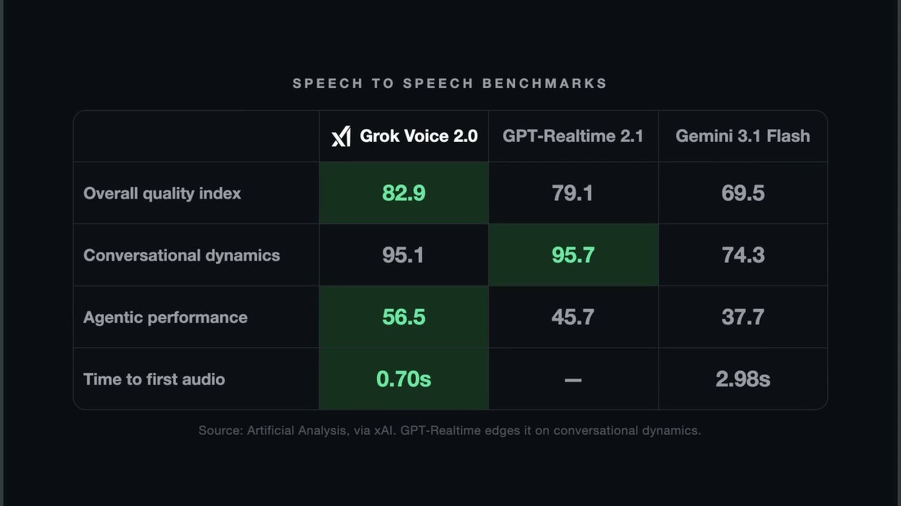

Blog
Written guides, deep dives, and tutorials on AI engineering and automation.
Join the AI Academy Community
Master AI engineering, access automated workflows, and connect with other builders. Join on Skool →

Gemini Spark Full Course: Build Always On AI Agents (No Code)
A full 96 minute course on Gemini Spark, Google's agentic workspace. The four surfaces, custom skills, recurring schedules, the trigger question that powers 24/7 monitors, and how to price these builds for clients. No code required.
Google Flow Tutorial: Edit Any Video With Gemini Omni (One Prompt)
I gave Gemini Omni my raw talking head footage and one templatized prompt, and it handed back an edited video: kinetic typography, brand slates, color floods, transitions. Here is the exact workflow, the prompt, and the pitfalls that will burn you.
GPT 5.6 Luna Just Got 80% Cheaper
OpenAI cut GPT 5.6 Luna's price by 80% on July 30, and the savings came from efficiency work the model did on itself.

Fish Audio Made Its Best TTS Model Free (83 Languages)
Fish Audio released S2.1 Pro, their flagship text to speech model, as a free API with no hard usage cap. 83 languages, roughly 90ms to first audio, and voice cloning included on the free tier.

Grok Voice 2.0 Hears Better Than Transcription Models
xAI's new speech to speech model makes up to 2x fewer errors than Deepgram Nova 3 and ElevenLabs Scribe v2, the models built purely for transcription. In noisy audio the gap grows to roughly 10x.

Lyria 3.5 Fixes the Things AI Music Always Got Wrong
Google's new music model is live in Flow Music, and it targets the exact failures that made AI songs obvious: flat vocals, looping melodies, and lyrics that ignore the structure you asked for.

Kimi K3 Is Open Source. You Still Can't Run It.
Kimi K3's weights are genuinely open, no license gate, no waitlist. The download is 594GB and the floor to load it is eight H100s. Here is what the hardware actually costs, why the community quantization is a trap right now, and the three real ways to use K3.

Kimi K3 vs Claude Fable 5: Same Bug, Wild Results
The Cline team threw a real bug from their own repo at Kimi K3 and Claude Fable 5. Both fixed it. One was 3.4x faster, the other 2.3x cheaper, and the reason why comes down to how Kimi was trained.

Hallmark Is a Free Skill That Stops Claude Code Building AI Slop
Claude Code builds the same generic landing page for everyone. Hallmark is a free open source skill that changes what it reaches for, and it refuses to design anything until it knows who the page is actually for.

Claude Opus 5: Frontier Intelligence at Half the Price
Claude Opus 5 is here: near Fable 5's frontier intelligence at half the price, a new agentic coding record, and roughly triple the field on brand new reasoning puzzles.

Meta Muse Image: The AI That Fixes Its Own Images
Meta's new Muse Image model reviews its own outputs and redoes the weak parts, a behavior Meta says it never programmed. It is already the number two image model in the world.

4 Ways to Force Claude Code to Build Beautiful Websites
Claude Code defaults to AI slop: Inter font, purple gradients, card grids. These four methods force it to produce websites that look designed instead.

Gemini 3.6 Flash Beats Sonnet 5 at Computer Use (and Costs Less Than Ever)
Google's new Flash models cut agent costs two ways at once, and buried in the announcement: the Gemini 4 pre-training run has already started.

Kimi K3: The Open Source Model That Just Beat Claude at Frontend Code
Moonshot AI's Kimi K3 is the biggest open model ever built at 2.8 trillion parameters. It ranks number one for frontend code and deep web research, and you can use it free right now.

Grok 4.5 Is the AI That Hallucinates the Least (And Costs a Fraction)
xAI's Grok 4.5 tops the one benchmark that rewards correct answers and punishes confident wrong ones. It ranks number one, and it undercuts the frontier models on price.

ChatGPT Can Now Talk: OpenAI's GPT Live Goes Full Duplex
OpenAI made GPT Live the default ChatGPT voice for everyone, free users included. It reacts while you talk, quietly calls in a smarter model for hard questions, and people prefer it 76 percent of the time.

Don't Lose Your Job to AI: The Remote Labor Index Results
The Center for AI Safety graded AI agents on real paid freelance work against human professionals. Eight months ago the best model finished 4 percent of a project start to finish. Now it finishes 16 percent.

Ora Directory: AI Agents Now Have Their Own Google
Ora Directory is the agentic index of the web. It scores tools on whether an AI agent can discover, read, and act on them, so you can plug the best ones straight into your projects.

OpenFlow: The Free, Open Source Wispr Flow Alternative for Mac
OpenFlow is a free, open source voice dictation app for macOS. Hold a key, speak, and your words appear at your cursor. On device, no cloud, no subscription.

The 2026 AI Stack: 6 Tools That Replaced the Old Ones
The tools I actually reach for in 2026 look nothing like the 2025 lineup. Six replacements that stuck, including my own open source dictation app.

Google's DESIGN.md Fixes AI's Brand Consistency Problem
Ask an AI agent for two pages and you get two different looking websites. Google just open sourced a single markdown file that fixes it, and it can catch its own accessibility bugs.

How I Use Claude Code to Edit My YouTube Videos For Me
I taught Claude to edit my videos for me. Transcription, take selection, and polish, all automated, and you can run the exact same skill on your own recordings for free.

Meta's AI Reads What You Type From Your Brain
No implant, no surgery. Meta's Brain2Qwerty reads a sentence you are typing straight from your brain signals, and version 2 just made a massive accuracy jump.

GPT 5.6: OpenAI's Most Powerful Model Is Here (But Locked)
OpenAI just previewed their most powerful model ever, and you can't use it. Not because it's broken. The government asked them to hold it back.

GLM-5.2 Fixed a Bug for $3.36 in 45 Minutes
A new open-weight coding model handled a real bug fix, found the root cause, and deployed a dashboard for $3.36. Here is why it is becoming a default workhorse.

GPT Realtime 2.1: The Speech-to-Speech Voice Model
OpenAI's new voice model processes speech directly instead of converting it to text first. That means less lag, smoother conversations, and it finally stops mangling order numbers.

The J-Space: How Claude Flags Its Own Lies
Anthropic found a hidden workspace inside Claude that flags deception before the model writes a single word. Nobody coded it in. It showed up on its own during training.

Claude Science: Anthropic's AI App for Real Lab Work
Anthropic just shipped a desktop app that doesn't just talk about science. It writes and runs the code to analyze proteins, molecules, and genomics, and it checks its own work.

Fable 5 Got Banned for Something GPT 5.5 Can Also Do
Claude Fable 5 is back online. It got hit with export controls over a jailbreak that writes exploit code, but new tests show every major model has the exact same weakness.

How to Build a Claude Skill in 60 Seconds
A Claude skill is just a folder with a markdown file. Teach the AI a workflow once, then reuse it every time. Here is how to build your first one.

Master Claude Code: The 7 Ways to Steer Its Behavior
Most people only use CLAUDE.md. There are actually 7 ways to control Claude Code, each with different tradeoffs in context cost, persistence, and authority. Here is when to use each one.

OpenAI's New Chip Isn't a GPU. It's Something Else.
OpenAI just announced Jalapeño, a custom chip built from scratch for AI inference. The wild part: OpenAI used its own models to design it in nine months.

AI Video Now Uses Real Google Maps Imagery
Google Flow now pulls real Google Maps Street View data into AI video generation. Type a landmark, get a scene that actually matches the real location.

Generate a Complete Short-Form Video for Free with MoneyPrinterTurbo
Script, footage, voiceover, subtitles, background music. All free. Here's exactly how to go from zero to a publishable short-form video in 20 minutes.

Sakana Fugu Just Beat Claude, GPT-5, and Gemini on Nearly Every Benchmark
Fugu from Sakana AI is not a single model. It is a multi-agent system that orchestrates Claude, GPT, and Gemini under one API, and it tops the leaderboard on nearly every benchmark.

Claude Is Giving You 20x Your Money's Worth (But For How Long)
A new SemiAnalysis study measured how much compute AI subscriptions actually give you. Power users are pulling thousands of dollars in token value for $20 to $200 a month.

How to Master Google Flow's Agent Mode for Professional AI Video Production
Learn how to use Agent Mode in Google Flow to create consistent, high-quality AI videos faster — with character sheets, iterative editing, and step-by-step scene compilation.

Meet Claude Mythos 5: The New AI Powerhouse for Science and Security
Anthropic just launched Claude Mythos 5, a powerful new AI designed for expert researchers and cybersecurity pros. Learn how it works and what makes it special.

I Scraped Thousands of Free Leads Using AI Agents (Zero API Fees)
Tired of expensive Google Maps API quotas? Learn how I built and open-sourced a dynamic U.S. lead generation scraper using Playwright and DuckDuckGo.

Bypass Quota Limits: Building a Zero-API YouTube Scraper
Tired of YouTube API quota limits? Learn how I built a zero-API YouTube scraping engine and SQLite-cached Go CLI that connects directly to AI agents via MCP.

Google Flow + Gemini Omni: The Most Powerful Creative AI in 2026 (Full Demo)
A complete hands-on guide and breakdown of Google Flow and the new Gemini Omni Flash model, showing live visual generation, conversational video editing, and SynthID watermarking.

Google I/O 2026: The New Gemini 3.5 Flash & Gemini Spark Agent Breakdown
A complete breakdown of the new Gemini 3.5 Flash model, Gemini Spark AI Agent platform, and how they change the landscape for engineers.

NVIDIA Sana: The 100x Faster FREE Open Source 4K Image and Video World Model
A deep dive into NVIDIA Sana, the revolutionary linear diffusion transformer that brings 100x faster 4K generation to consumer hardware.

How to Automate Your Entire Skool Community With One Tool
Learn how to use the open-source Skool Community automation CLI to sync data, automate posts and DMs, and let AI agents manage your community.

UI-TARS: ByteDance’s Open-Source Answer to Computer Use
ByteDance just released UI-TARS, an open-source Vision-Language Model that can act as a virtual operator for any GUI. Here is why it's a game-changer for AI agents.

Escaping the "Dumb Zone": Why Your AI Context Window is Your Biggest Secret Weapon
Think of your context window as an array. Learn why assigning multiple objectives to an LLM leads to 'The Dumb Zone' and how to keep your context lean for better performance.

Meet ZAYA1-8B: The Tiny AI Model That Thinks Like a Giant
Discover how Zyphra’s new ZAYA1-8B model uses smart technology to beat the biggest AI giants while running on AMD hardware.

OpenClaw 5.4 Is Here: Meet Your New AI Meeting Assistant
OpenClaw 5.4 has arrived with exciting updates, including a powerful new Google Meet agent that helps you take notes and chat in real-time.

Meet Your New AI Teammate: Claude Code 4.7 and the 'Grumpy Senior' Update
Discover how the new Claude Code 4.7 update and /perceive command are changing the way AI agents work as your digital employees.

Grok 4.3 Is Here: Everything You Need to Know About xAI’s New AI
Grok 4.3 has arrived with huge upgrades in reasoning, a massive memory window, and new tools to help you build and create faster than ever.

Motion Graphics Made Easy: A Beginner’s Guide to Google AI Flow
Learn how to turn static images into professional motion graphics using Google's powerful AI Creative Studio Flow. It's easier than you think!

NotebookLM Full Course 2026: The Complete Beginner's Guide
Everything you need to know about Google's NotebookLM — from uploading sources and asking questions, to generating audio overviews and building research workflows.

The Engineer's Guide to Claude Code in Production
How to use Claude Code effectively on real brownfield codebases — avoiding the pitfalls that make AI-assisted development painful and slow.

GPT-5.5 'Spud' Is Here: Everything You Need to Know About the New AI Agent Era
OpenAI just launched GPT-5.5, also known as 'Spud.' From hacking gadgets to changing how we work, here is what this powerful new AI means for you.

ChatGPT Images 2.0: Everything You Need to Know About the New AI
OpenAI just launched ChatGPT Images 2.0, a huge upgrade that changes how AI makes pictures. Learn how it works, why it's better at spelling, and how to use it.

OpenClaw 4.21 Update: Everything You Need to Know
OpenClaw 4.21 is here to make your AI work smoother and faster. Check out the biggest fixes for crashes, costs, and macOS performance.

Master the Google Gemini Mac App: A Simple Guide to Boosting Your Productivity
Learn how to set up and master the Google Gemini app for macOS. Discover hidden tricks to make your computer smarter and get your work done faster.

Stop Building Dumb AI Agents: How to Give Your AI a Long-Term Memory
Tired of your AI forgetting everything? Learn how to build a smart AI assistant that remembers your projects and turns conversations into real plans.

How to Build Your Own AI Research Assistant (Step-by-Step Guide)
Stop searching for AI news manually. Learn how I built a custom AI agent to automatically find the latest updates from GitHub, Hacker News, and more.

How to Stack Free Gemini Keys for Unlimited AI Usage
Tired of hitting AI rate limits? Learn how to use OpenClaw to stack multiple free Gemini API keys so your projects never stop working.

OpenClaw Skills Explained: A Beginner's Guide
OpenClaw Skills are the building blocks of AI automation — plug-and-play modules that teach your AI assistant how to do specific tasks. Here's how they work and how to build your own.

What Is Gemma 4? How to Use Its Massive 256K Context Window
Learn how Google's new Gemma 4 model uses a huge 256K context window to help AI agents remember long conversations and solve complex problems.

OpenClaw 4.8 Is Here: The Biggest AI Automation Updates Yet
OpenClaw 4.8 brings massive upgrades like Android voice control, Task Flow automation, and faster workflows. Here is everything you need to know to get started.

Google’s New Veo 3.1 Lite: Making AI Video Easier and Cheaper
Google just released Veo 3.1 Lite, a powerful new tool that makes creating AI videos more affordable than ever. Let's look at how it works.

What is Qwen 3.5 Omni? The Future of AI Agents is Here
Alibaba just released Qwen 3.5 Omni, an AI that sees, hears, and speaks at the same time. Learn how this new model is changing the way we build apps.

OpenClaw 3.28 Is Here: 3 Major Updates You Need to Know
OpenClaw just got a massive upgrade! From one-click skill installs to smarter AI web search, here is everything you need to know about version 3.28.

Build Your First Clawdbot Skill: A Beginner's Guide to AI Automation
Learn how to build your own custom Clawdbot skills to automate tasks like YouTube SEO, even if you run into bugs along the way.

How to Build AI Tools: A Real Look at My Clawdbot Project
Ever wonder what it's really like to build AI tools? Join me as I walk through the messy, exciting process of coding a new skill for my robot, Clawdbot.

How to Build Your Own iMessage Autoresponder with AI
Learn how to build a smart autoresponder for your iMessage using Clawdbot in this step-by-step coding guide.

Build Your Own AI iMessage Assistant: A Step-by-Step Guide
Learn how to build an AI-powered iMessage auto-replier that uses Google Gemini to understand photos and chat with your friends automatically.

How to Build Your Own AI Content Bot (The Chill Way)
Join me as I walk through the basics of building a custom AI agent to automate your content strategy. It’s easier than you think!

How to Build Your Own AI Content Robot: A Relaxing Guide
Learn how to build an AI agent that automates your content creation. Join me as we code, troubleshoot, and explore the world of AI workflows.

Google Flow’s Big Update: Create Amazing AI Videos and Images Easily
Google Flow just got a massive upgrade. Discover the new Nano Banana 2, VEO 3.1, and powerful editing tools that make AI content creation faster than ever.

How to Build Your First AI Content Automation Agent
Join me as we build a simple AI workflow to automate your content strategy, from researching trending topics to writing video scripts.

How to Clone Any Voice for Free (Without the Cloud!)
Learn how to use VoiceBox to clone voices and create high-quality speech right on your own computer, keeping your data private and free.

How to Build Your Own Free AI Text Message Auto-Responder
Learn how to use Clawdbot and Google's Gemini AI to automatically reply to your iMessages for free with this simple, step-by-step guide.

How to Automate Cold Outreach Using AI Agents (The Alex Hormozi Way)
Learn how to build your own AI agent that writes personalized, high-converting DMs for you using free tools and Google Colab.

I Let an AI Robot Text for Me for 24 Hours: Here’s What Happened
I let my custom AI, ClawdBot, handle all my text messages for an entire day. Find out if it made new friends, caught scammers, or caused total chaos.

How to Host Your Own Bot for Free: A Student’s Guide to Azure
Learn how to use your student email to get free cloud hosting for your bots using the GitHub Student Developer Pack and Microsoft Azure.

How to Put Your First Web App Online for Free (Step-by-Step Guide)
Learn how to take your Python web app from your computer to the internet for free using Render. No credit card required!

Build Your Own AI Team: How to Use CrewAI and Gemini in Google Colab
Learn how to build powerful AI agent teams using CrewAI and Google Gemini inside Google Colab with this easy step-by-step guide.

Build Your Own AI Social Media Manager: A Beginner’s Guide
Learn how to build an AI agent that writes personalized messages for you using the OpenAI SDK and Google Gemini. It's easier than you think!

How to Get Your Free Google Gemini API Key (Step-by-Step)
Learn how to easily generate your own Google Gemini API key for free so you can start building your own AI apps today.

How to Build Your First AI App with Google Gemini (Easy Guide)
Learn how to use Google's Gemini AI in your own projects! This beginner-friendly guide shows you how to get an API key and make your first call in just a few steps.

How to Build Your Own AI Research Assistant
Learn how to build a smart AI agent that searches the web and writes summaries for you using Python and Gemini.

How to Build Your First AI-Powered Slack Bot with Python
Learn how to build a simple AI agent that automatically posts motivational messages to Slack using Python and Google's Gemini model.

What is Linear Regression? AI Explained for Beginners
Ever wonder how computers predict house prices or future sales? Learn how Linear Regression works in this simple, step-by-step guide.

Why Neural Networks Fail: Vanishing and Exploding Gradients Explained
Ever wonder why your AI model stops learning or crashes? Learn how vanishing and exploding gradients break neural networks and how to fix them.

Loss Functions Explained: How AI Models Learn from Mistakes
Learn how AI models use loss functions to measure their mistakes and get smarter. Discover the simple secret behind training accurate machine learning models.

How to Actually Get Hired as a Software Engineer (My Secret Strategy)
Struggling to find a tech job? Learn the two simple strategies that helped me go from failing interviews to getting hired as a software engineer.

How Does AI Understand You? NLP Explained Simply
Ever wonder how your phone knows exactly what you're saying? Learn how computers use NLP to turn human language into machine smarts.

How Does AI See? A Simple Guide to Convolutional Neural Networks
Ever wonder how your phone recognizes your face or how self-driving cars 'see'? Learn how Convolutional Neural Networks (CNNs) help computers understand images.

How Does Face ID Actually Work? The Tech Behind Your iPhone
Ever wonder how your iPhone recognizes your face without taking a picture? Let's dive into the invisible 3D mapping technology that keeps your data safe.

What is an AI Agent? The Real Difference Between Chatbots and Agents
Curious about AI agents? Learn why they are different from chatbots and how they move from just chatting to actually getting work done.

What Is an AI Agent? The Big Difference Between Talking and Doing
Ever wonder how AI goes from just answering questions to actually doing work for you? Discover the world of AI Agents and how they are changing the game.

Why Did AI Get So Smart So Fast? The Secret Behind LLMs
Ever wonder why AI feels like it suddenly got a brain? Let's talk about scaling laws—the simple secret that made AI models powerful in 2025.

Nano Banana Pro vs. ChatGPT Image 1.5: Which AI Tool Should You Use?
Confused about which AI image tool is right for you? As an AI engineer, I break down the real differences between Nano Banana Pro and ChatGPT Image 1.5.

How Google Maps Predicts Traffic Before It Even Happens
Ever wonder how Google Maps knows there is a traffic jam before you get there? Learn how AI uses data to predict the road ahead.

How TikTok's AI Decides Which Videos Go Viral
Ever wonder how TikTok knows exactly what you want to watch? I'm breaking down the AI secrets behind the algorithm and how videos really go viral.

What Is GPT-5.2? The Future of AI Explained Simply
Curious about what comes after GPT-4? Software engineer Robby breaks down how GPT-5.2 is moving from just predicting words to actually getting things done for you.

How to Use AI to Write Viral YouTube Video Titles
Struggling to name your videos? Learn how to use OpenAI as your personal brainstorming partner to create catchy, high-performing YouTube titles in seconds.

Why Does Netflix Know What You Want to Watch? How AI Makes It Happen
Ever wonder why your Netflix homepage looks different from your friends'? Software engineer Robby explains how AI and micro-tagging pick your next favorite show.

What is Machine Learning? A Simple Guide for Beginners
Ever wonder how computers learn? Join me, Robby, as I break down machine learning, supervised learning, and unsupervised learning in plain English.

How Does YouTube Know What You Want to Watch Next?
Ever wonder how YouTube picks your next video? Join me as we peek behind the curtain at the machine learning magic that powers your homepage.

What is Multimodal AI? Meet the AI That Can See and Hear
Ever wonder how AI is learning to see and hear? Discover how Multimodal AI is changing the way machines understand the world, moving beyond just simple text.

How Spotify Knows Exactly What You Want to Hear
Ever wonder how Spotify picks your perfect playlist? Discover the math and AI magic behind your Discover Weekly songs.

What is AI Fine-Tuning? Turn Your Chatbot into an Expert
Learn how fine-tuning lets you customize AI models for your specific needs without spending millions of dollars.

Build Your First Neural Network in Java: A Step-by-Step Guide
Learn how to build a neural network from scratch using only Java. No libraries, just pure code to understand how AI really works.

How Does ChatGPT Read? The Secret World of Tokenization
Ever wonder how AI understands your questions? It’s not magic—it’s math! Learn how tokenization turns your words into numbers.

What Is Generative AI? How Computers Are Starting to Create
Ever wonder how computers make art and write stories? Let's look at how Generative AI works like a master chef inventing new recipes.

Why AI Needs a 'Practice Test' to Get Smarter
Ever wonder how AI learns? Just like you, it needs practice tests. Learn why a validation set is the secret to building better AI models.

Stop Using AI Like a Magic Wand: How to Build Pro-Level Code
Think AI is a magic wand? Think again. Learn how treating AI like an employee—not a toy—can help you write better code and master prompt engineering.

How AI Does Math With Words: A Simple Guide to Embeddings
Ever wonder how computers understand language? Learn how AI uses a secret code called 'embeddings' to turn words into math.

What is a Decision Tree? AI Made Simple
Ever wonder how computers make choices? Learn how decision trees work like a simple game of '20 Questions' to help AI think clearly.

Training vs. Test Sets: How to Give Your AI a Final Exam
Ever wonder how we know if an AI is smart or just cheating? Discover why using a Test Set is the secret to building reliable machine learning models.

What Is an AI Training Set? AI Basics Explained
Ever wonder how computers learn? Join me, Robby, as I break down AI training sets and how they teach machines to see the world.

How AI Learns: The 'Blame Game' of Neural Networks
Ever wonder how AI fixes its own mistakes? Join me as we break down backpropagation using the simple concept of the 'Blame Game.'

Backpropagation: The Core of How Neural Networks Train
Ever wonder how AI gets smarter? Learn how the backpropagation algorithm helps neural networks learn from their mistakes in this simple guide.

What Is a Token? How AI Reads the Internet
Ever wonder how ChatGPT understands you so fast? It uses a secret 'Lego language' called tokens to read the world in pieces.

How Does AI Read? The Secret of the Attention Mechanism
Ever wonder how ChatGPT knows exactly what you mean? Learn how the 'Attention Mechanism' helps AI understand context just like a human.

Logistic Regression: Why It’s Not Actually 'Regression'
Think Logistic Regression is for predicting numbers? Think again! Join me as I explain how this simple AI tool helps computers make 'Yes' or 'No' decisions.

What is a Transformer? How AI Learns to Talk
Ever wonder what the 'T' in ChatGPT stands for? Learn how Transformer technology changed everything about how computers understand human language.

What is Regression? AI Prediction Explained Simply
Ever wonder how AI guesses numbers like house prices or stock trends? Learn how regression works in plain English.

Why Your AI Might Be Lying to You (And How to Fix It)
Think AI is just a search engine? Think again. Learn why AI 'hallucinates' and how to stop trusting it blindly.

How Do AI Computers Learn? It’s Just Like Playing Basketball!
Ever wonder how AI actually learns? Discover how neural networks improve by using a simple basketball analogy from a real-world software engineer.

Linear Regression: The Math Behind AI Predictions
Curious how AI makes predictions? Learn how linear regression uses simple math to help computers guess everything from gas mileage to future sales.

Backpropagation with Real Math, Examples, and an Analogy
Ever wonder how AI actually learns from its mistakes? Let's break down the math behind neural networks in a way that is easy to understand.

What is an LLM? How AI Like ChatGPT Actually Works
Ever wonder how AI chats with you like a human? I'm breaking down how Large Language Models work in simple, easy-to-understand terms.

What is AI Classification? Sorting Data Made Simple
Ever wonder how your email blocks spam? Learn how AI uses classification to sort information into categories like a pro.

How AI Learns: The 'Blame Game' of Backpropagation
Ever wonder how AI fixes its own mistakes? Learn how backpropagation works to trace errors through a neural network in this simple guide.

Hyperparameters vs. Parameters: The Oven Settings of AI
Ever wonder how AI learns? I'm Robby, and I’m breaking down the difference between AI parameters and hyperparameters using a simple kitchen analogy.

What is a Gradient? How AI Actually Learns
Curious how AI gets smarter? Learn how a simple tool from calculus called the 'gradient' acts like a compass to help computers fix their mistakes.

What Is a Loss Function? The Scoreboard That Teaches AI
Ever wonder how AI learns? Discover how a loss function acts like a scoreboard to help computers fix their mistakes and get smarter.

What are Labels in Machine Learning? An Easy Guide
Ever wonder how AI learns to tell a cat from a dog? It all starts with labels. Learn how this 'answer key' helps computers understand the world.

What Are AI Parameters? A Simple Guide to Machine Learning
Ever wonder how AI actually learns? Learn what parameters are and how they help computers store knowledge in this easy guide from a software engineer.

What is Supervised Learning? AI With an Answer Key
Ever wonder how computers learn? Discover how supervised learning works by using an answer key to teach AI models to make smart predictions.

Why Data is Like Gold for AI: A Simple Guide
Ever wonder how AI gets so smart? It’s all about the data! Learn why high-quality information is the real secret behind every powerful AI model.

How Neural Networks Learn: Backpropagation Explained Simply
Ever wonder how AI actually learns? We’re breaking down backpropagation step-by-step using easy numbers so you can see exactly how a neural network improves.

What Is an AI Algorithm? A Simple Guide for Everyone
Curious how AI actually works? Learn what an algorithm is and how it helps computers learn, explained by a real software engineer.

How AI Learns: A Simple Guide to Training Models
Ever wonder how computers get so smart? Learn how AI models learn from examples and feedback in this easy-to-understand guide.

What Is an AI Model? The Secret Recipe Explained
Ever wonder how computers learn to think? Let's break down what an AI model is using a simple kitchen recipe analogy.

AI vs. ML vs. Deep Learning: What’s the Difference?
Confused by all the AI buzzwords? Let's break down AI, Machine Learning, and Deep Learning using simple analogies to see how they fit together.

Finding the Perfect Learning Rate: A Guide to Training AI
Learn how AI models actually learn from their mistakes by tuning the learning rate, the secret setting that makes or breaks your model training.

Deep Learning vs. Machine Learning: What Is the Difference?
Ever wonder how AI actually works? Join me as we break down the difference between Machine Learning and Deep Learning in simple terms.

Machine Learning Explained: How Computers Learn Like Humans
Ever wonder how computers learn on their own? I'm Robby, an AI engineer, and I'm breaking down how machine learning works without the complicated math.

What Is AI? A Simple Guide for Everyone
Ever wonder how computers learn to think like us? Join software engineer Robby as he breaks down exactly what Artificial Intelligence is in plain English.

What is the Sigmoid Function? A Bouncer’s Guide to AI
Learn how the sigmoid activation function works using a fun club bouncer analogy. We break down complex AI math into simple terms.

What is the Sigmoid Function? AI Math Made Easy
Curious how AI thinks in probabilities? Learn how the sigmoid function works to turn any number into a simple value between 0 and 1.

Why Neural Networks Need Activation Functions: A Simple Guide
Ever wonder how AI learns complex patterns? Discover how activation functions help neural networks bend reality to make better predictions.

What Are Activation Functions? Neural Networks Made Simple
Ever wonder how AI thinks? Discover how activation functions like ReLU help neural networks learn from complex data in this easy guide.

What is the Dead ReLU Problem? How to Fix It!
Ever wonder why your AI model stops learning? It might be the 'Dead ReLU' problem. Learn how to fix it with simple tweaks to your neural network.

Gradient Descent: How AI Learns from Its Mistakes
Ever wonder how AI gets smarter? Learn how machines use a simple trick called gradient descent to improve their accuracy, explained in plain English.

What Is ReLU? The Light Switch of AI Explained
Learn how the ReLU activation function works using a simple light switch example. Discover how AI makes decisions in this easy-to-follow guide.

What is the Feed Forward Layer? AI Explained Simply
Ever wonder how AI models make smart decisions? Let's break down the feed forward layer, the part of the AI that does the deep thinking.

How Do AI Models Think? A Simple Guide to Neural Networks
Ever wonder how AI makes decisions? I’m breaking down exactly how a neural network turns simple data into smart predictions in this step-by-step guide.

How AI Reads: Understanding Positional Encoding in Transformers
Ever wonder how AI understands the order of words in a sentence? Learn how positional encoding helps Transformer models make sense of sequences.

What is Self-Attention? How AI Understands Language
Ever wonder how AI understands a full sentence? Let's break down self-attention, the secret power behind transformer models, in plain English.

How AI Translates Languages: The Encoder-Decoder Attention Trick
Ever wonder how AI translates languages? Discover how the encoder-decoder attention layer helps computers focus on the right words to get the translation perfect.

How AI Reads: Turning Words Into Numbers Explained
Ever wonder how AI understands human language? Discover how transformers use embeddings and positional encoding to turn words into data.

How Does AI Talk? The Simple Secret of Transformers
Ever wonder how AI understands your words? Learn how transformer models use a smart system called queries, keys, and values to find the right information.

How the Add & Norm Layer Keeps AI Models Stable
Ever wonder how AI learns without getting confused? Discover the secret behind the 'Add & Norm' layer in transformers and why it's like a safety net for deep learning.

How AI Reads: A Simple Guide to the Transformer Encoder
Ever wonder how AI understands your sentences? Learn how the Transformer encoder works in this easy, beginner-friendly guide by a software engineer.

How AI Writes: A Simple Guide to the Transformer Decoder
Ever wonder how AI creates sentences? Let's break down how the transformer decoder works like a student taking a test.

How AI Reads: The Secret Power of Transformers
Ever wonder how AI understands the meaning behind words? Learn how the 'self-attention' trick helps computers read just like you do.

Why Do AI Models Have So Many 'Attention Heads'? Explained
Ever wonder how AI understands language so well? It uses 'multi-head attention' to focus on many things at once, just like a team working together.

Activation Functions Explained: ReLU, Sigmoid, and Tanh (with Visuals)
Activation Functions Explained: ReLU, Sigmoid, and Tanh (with Visuals)

How to Build a Speech-to-Text App with Java and AI
Learn how to turn spoken audio into text using Java and the AssemblyAI API with this simple, step-by-step guide.

How AI Works: Understanding the Transformer Model
Ever wonder how ChatGPT understands your sentences? Learn how the Transformer model translates languages step-by-step in this simple guide.

How Do AI Neural Networks Make Decisions? A Simple Guide
Ever wonder how AI makes big decisions like approving a loan? Discover how neural networks use math to turn data into a simple 'Yes' or 'No'.